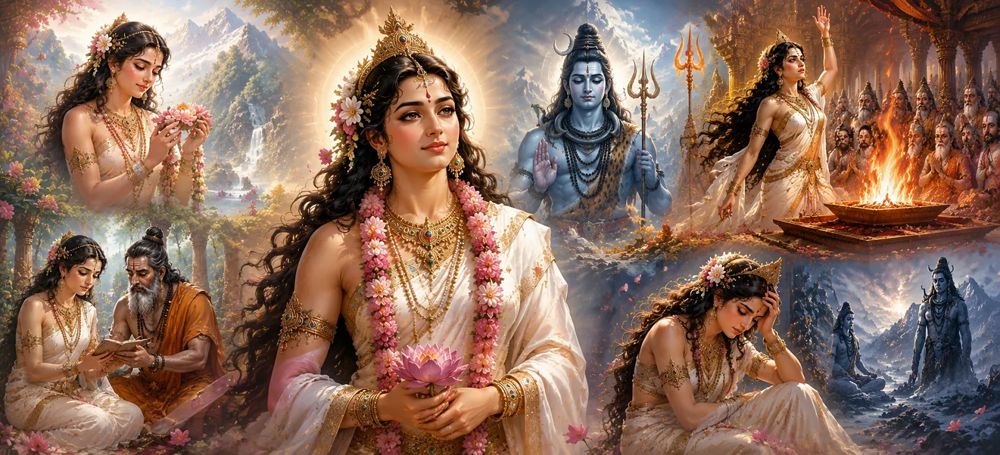

देवी सती की पवित्र कहानी शिव पुराण में सबसे गहन और प्रेरक कथाओं में से एक की शुरुआत का प्रतीक है। आदि शक्ति के दिव्य अवतार के रूप में प्रतिष्ठित, सती एक पवित्र उद्देश्य के साथ पृथ्वी पर अवतरित हुईं - भगवान शिव के साथ एकजुट होने और भक्ति, पवित्रता और दिव्य प्रेम की शाश्वत शक्ति का प्रदर्शन करने के लिए। उनका जीवन अटूट विश्वास और आध्यात्मिक समर्पण का एक ज्वलंत उदाहरण बन गया।
प्रजापति दक्ष सृष्टि के सबसे शक्तिशाली पूर्वजों में से एक थे और देवताओं और ऋषियों के बीच उनका बहुत सम्मान था। अधिकार और प्रतिष्ठा से धन्य होकर, उन्होंने सृष्टि का विस्तार करने और पूरे ब्रह्मांड में अपना प्रभाव मजबूत करने के लिए खुद को समर्पित कर दिया। फिर भी, उनकी बुद्धिमत्ता और उपलब्धियों के बावजूद, घमंड धीरे-धीरे उनके दिल में प्रवेश कर गया और उनकी आध्यात्मिक दृष्टि पर ग्रहण लगाने लगा।
देवताओं की प्रार्थना और दैवीय संतुलन की ब्रह्मांडीय आवश्यकता के जवाब में, सर्वोच्च देवी ने दक्ष की बेटी के रूप में जन्म लिया। सती के जन्म के क्षण ने संसार को खुशी और शुभता से भर दिया। दिव्य प्राणी आनन्दित हुए, स्वर्ग में पवित्र चिन्ह प्रकट हुए और सारी सृष्टि उनकी उपस्थिति से धन्य हो गई।
जैसे-जैसे सती बड़ी हुईं, उनका दिव्य स्वभाव अधिकाधिक स्पष्ट होता गया। उन्होंने अपनी उम्र से कहीं अधिक असाधारण ज्ञान, करुणा, पवित्रता और भक्ति प्रदर्शित की। उनके सौम्य चरित्र ने उन सभी का स्नेह जीत लिया जो उन्हें जानते थे, जबकि उनका आध्यात्मिक झुकाव उन्हें सामान्य प्राणियों से अलग करता था। एक बच्ची के रूप में भी, वह अक्सर सर्वोच्च भगवान का ध्यान करती थी और पवित्र पूजा में आनंद पाती थी।
सभी दिव्य रूपों के बीच, सती को भगवान शिव के प्रति एक अवर्णनीय आकर्षण महसूस हुआ। जब भी वह उनका पवित्र नाम सुनती या उनकी महानता की कहानियाँ सुनती, उनका हृदय भक्ति से भर जाता। हालाँकि उसने उसे कभी नहीं देखा था, फिर भी उसने कैलाश के भगवान के साथ एक गहरा आध्यात्मिक संबंध महसूस किया, एक ऐसा बंधन जो ब्रह्मांड के भविष्य को आकार देने के लिए नियत था।
जैसे-जैसे वर्ष बीतते गए, ऋषि-मुनि और दिव्य प्राणी अक्सर राजाओं के दरबार और देवताओं की सभाओं में भगवान शिव की महानता के बारे में बात करते थे। सती ने इन पवित्र वृत्तांतों को ध्यान से सुना और सर्वोच्च भगवान के गुणों से गहराई से प्रेरित हुईं। उनकी वैराग्य, करुणा, बुद्धिमत्ता और असीम शक्ति ने उनके हृदय में और भी अधिक भक्ति जगा दी।
सती ने जितना अधिक भगवान शिव के बारे में जाना, उनका आध्यात्मिक आकर्षण उतना ही मजबूत होता गया। उसे एहसास हुआ कि कोई भी सांसारिक राजकुमार या दिव्य प्राणी उस भगवान से तुलना नहीं कर सकता जो समय और सृष्टि से परे अस्तित्व में है। उसके विचार तेजी से शिव पर केंद्रित हो गए, और उसने चुपचाप प्रार्थना की कि वह एक दिन उनकी दिव्य कृपा के योग्य बन जाए।
दक्ष की बेटी के रूप में जन्म लेने के बावजूद, सती दिव्य माँ की एक शाश्वत अभिव्यक्ति बनी रहीं। उनकी पवित्रता और भक्ति उस सर्वोच्च शक्ति को दर्शाती है जिससे सारी सृष्टि उत्पन्न होती है। देवताओं ने उनके पवित्र स्वभाव को पहचाना और समझा कि उनका भाग्य भगवान शिव और ब्रह्मांड के भविष्य के कल्याण से अविभाज्य रूप से जुड़ा हुआ है।
जो एक शाही राजकुमारी का सादा जीवन प्रतीत होता था वह वास्तव में एक दैवीय योजना का अनावरण था। सती के माध्यम से, सर्वोच्च देवी ने उन घटनाओं के लिए रास्ता तैयार किया जो ब्रह्मांडीय व्यवस्था को बदल देंगी और शक्ति और शिव के बीच शाश्वत बंधन को प्रकट करेंगी। उनकी यात्रा केवल व्यक्तिगत नहीं थी - यह ब्रह्मांड की नियति में एक पवित्र अध्याय थी।
सती की भक्ति धीरे-धीरे एक पवित्र संकल्प में बदल गई। वह अब केवल भगवान शिव की महानता के बारे में सुनना नहीं चाहती थी; वह अपना पूरा जीवन उन्हें समर्पित करना चाहती थी। उसका हृदय महादेव पर स्थिर रहा, और प्रत्येक विचार, प्रार्थना और पूजा के कार्य ने उनकी दिव्य उपस्थिति प्राप्त करने के उसके संकल्प को मजबूत किया।
दिव्य प्राणियों ने सती की असाधारण भक्ति को प्रशंसा के साथ देखा। वे समझ गए कि भगवान शिव के प्रति उनका प्रेम सामान्य स्नेह नहीं बल्कि एक दैवीय उद्देश्य की अभिव्यक्ति है। देवताओं में से कई यह मानने लगे कि शिव और सती का मिलन समस्त लोकों में अपार आशीर्वाद लाएगा।
जब सती की भक्ति बढ़ती रही, भगवान शिव कैलाश पर्वत पर गहन ध्यान में लीन रहे। सांसारिक चिंताओं से अलग होकर, वह पूर्ण आध्यात्मिक आनंद में रहते थे। न तो देवताओं की इच्छाओं और न ही ब्रह्मांड के मामलों ने उनकी अटूट एकाग्रता को परेशान किया।
देवताओं को धीरे-धीरे एहसास हुआ कि सृष्टि के कल्याण के लिए भगवान शिव और देवी सती का मिलन आवश्यक है। हालाँकि, ध्यान में शिव की पूर्ण तल्लीनता ने एक चुनौती पेश की। जैसे ही दिव्य प्राणियों में चिंता फैल गई, ऐसी घटनाएं सामने आने लगीं जिससे जल्द ही एक शक्तिशाली शक्ति का उदय हुआ जो देवताओं के दिलों को भी प्रभावित करने में सक्षम थी।
प्रजापति दक्ष की पुत्री के रूप में देवी सती का पवित्र स्वरूप।
भगवान शिव के प्रति अटूट भक्ति का जागरण।
शक्ति और शिव को एकजुट करने के लिए एक लौकिक योजना की शुरुआत।
यह अध्याय सिखाता है कि सच्ची भक्ति दैवीय मिलन से बहुत पहले शुरू होती है। परमेश्वर के लिए आत्मा की शुद्ध लालसा ही पूजा का एक पवित्र रूप है।
"जो हृदय भक्ति से भरा है वह स्वाभाविक रूप से सर्वोच्च भगवान तक अपना रास्ता ढूंढ लेता है, जैसे एक नदी अनिवार्य रूप से सागर तक पहुंच जाती है।"
देवी सती के दिव्य जीवन और भगवान शिव के प्रति उनकी बढ़ती भक्ति के बारे में जानने के बाद, अगले अध्याय की ओर बढ़ें और जानें कि कैसे इच्छा के देवता काम, लौकिक कहानी में प्रवेश करते हैं।